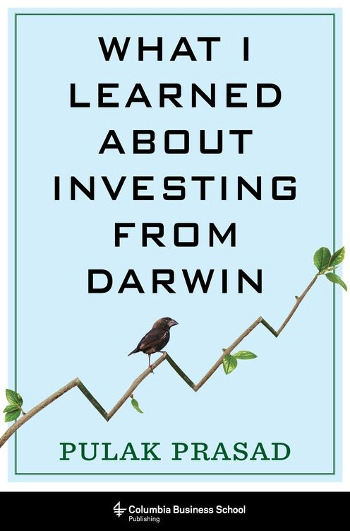

2007年，普拉克·普拉萨德（Pulak Prasad）在新加坡创立那烂陀资本（Nalanda Capital），专注于印度上市公司股权投资。按作者在书中披露的截至2022年9月数据，投入其第一只基金的1卢比增至13.8卢比，同期Sensex指数为3.9卢比、中盘指数约4卢比；这里比较的是作者选择的起止日期和指数，并非经书中完整展示的审计报告。那烂陀管理的资产总额约50亿美元，不等于全部集中在第一只基金。普拉萨德此前任职于麦肯锡（McKinsey）和华平投资（Warburg Pincus），曾任华平印度业务联席主管。2023年5月，哥伦比亚商学院出版社出版《What I Learned About Investing from Darwin》，全书328页。2025年2月，中译出版社推出彭相珍翻译的中文版。
全书围绕三句话展开：规避重大风险、以合理价格买入优质企业、买入后尽量不作为。第一句话落实为一份排除清单：不碰有欺诈记录的实控人，不做成功率很低的困境反转，不买高杠杆公司，也回避热衷并购扩张的管理层。第二句话的核心指标是资本回报率（ROCE）。普拉萨德用德米特里·别利亚耶夫（Dmitri Belyaev）和柳德米拉·特鲁特（Lyudmila Trut）始于1959年的银狐驯化实验做类比：实验按温顺程度选育后，还观察到垂耳、花斑等共同变化；作者据此主张，高ROCE可以作为继续调查管理层、资本配置和竞争壁垒的入口。这个类比不是因果证明，高ROCE也可能来自周期高点、会计口径或暂时垄断。第三句话借红鹿（red deer）争偶说明避免重伤比赢得每次竞争重要，对应到投资上就是宁可错过，也不要因仓促买入造成永久损失。书中用一组假设概率比较不同筛选策略，意在说明减少错误买入比减少错过机会更重要，而不是提供可直接套用的历史命中率。
宾夕法尼亚大学首席投资官彼得·阿蒙（Peter Ammon）在封面推荐语中说，普拉萨德论证了进化生物学可以为投资提供启发（"the science of evolutionary biology informing the art of investing"）。这句话准确概括了本书的写法，也提示其限制：动物行为负责帮助记忆原则，不能替代公司数据。CFA Institute书评人伊恩·罗伯逊（Ian Robertson, CFA）肯定作者以ROCE为起点、再叠加财务与商业分析的顺序，同时指出长期持有与拒绝高负债之间可能出现冲突——若持有的公司后来因杠杆收购背上债务，投资者仍需决定何时打破“不作为”。这类边界条件比多列几条名人赞语更能说明该方法实际怎样使用。
普拉萨德管理的组合极度集中且换手率很低，那烂陀成立十余年，多数重仓股的持有期以十年计，这与依赖频繁调仓的主动基金不同。他把选股的大部分精力放在买入前的"拒绝"上，一旦买入，接下来的工作主要是检查持有理由并等待企业复利，而不是为交易而交易。这种做法对照的是他在麦肯锡和华平投资期间见惯的另一套逻辑——快速做出判断、依赖模型给出的精确数字。他在书中批评这种"虚假精确"：两位小数的估值往往掩盖了对竞争优势持续期、管理层诚信和再投资空间的粗略假设。全书给出的是先排除、再判断质量、最后尽量少动的筛选顺序，不是一套能省略持续监督的估值模型。组合高度集中还会放大单家公司判断错误，这项风险不能靠低换手本身消除，仍须单独评估清楚。